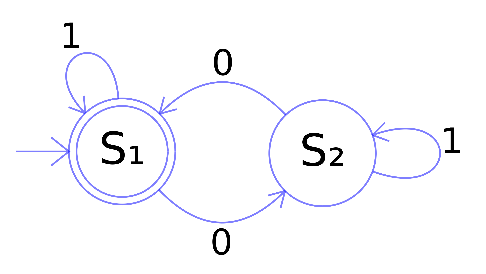
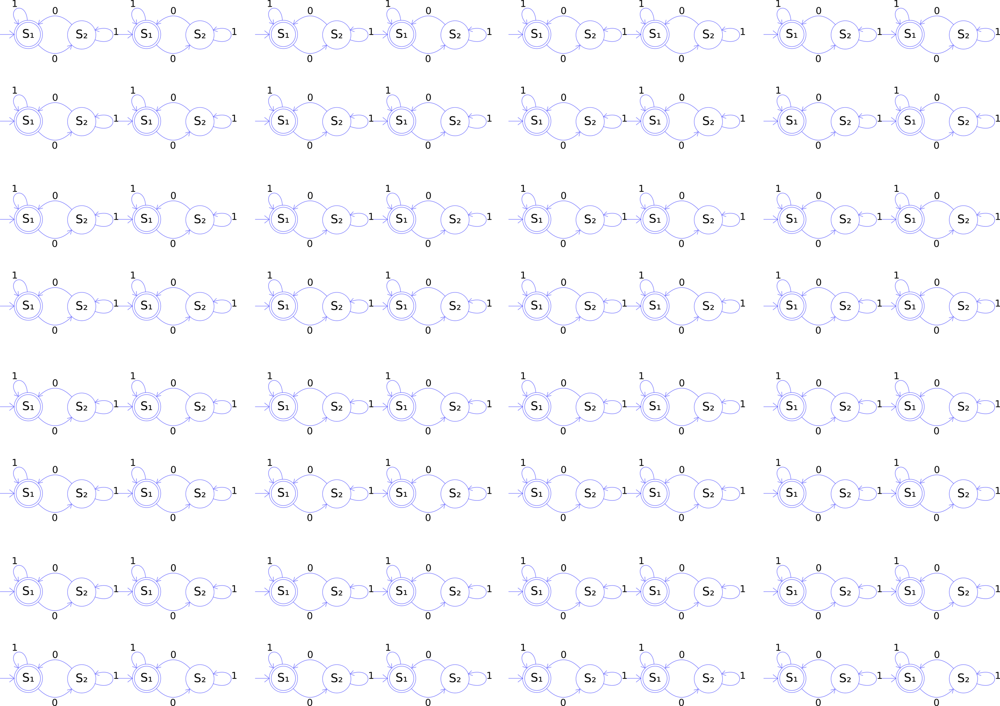
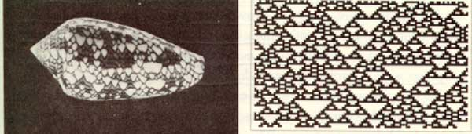
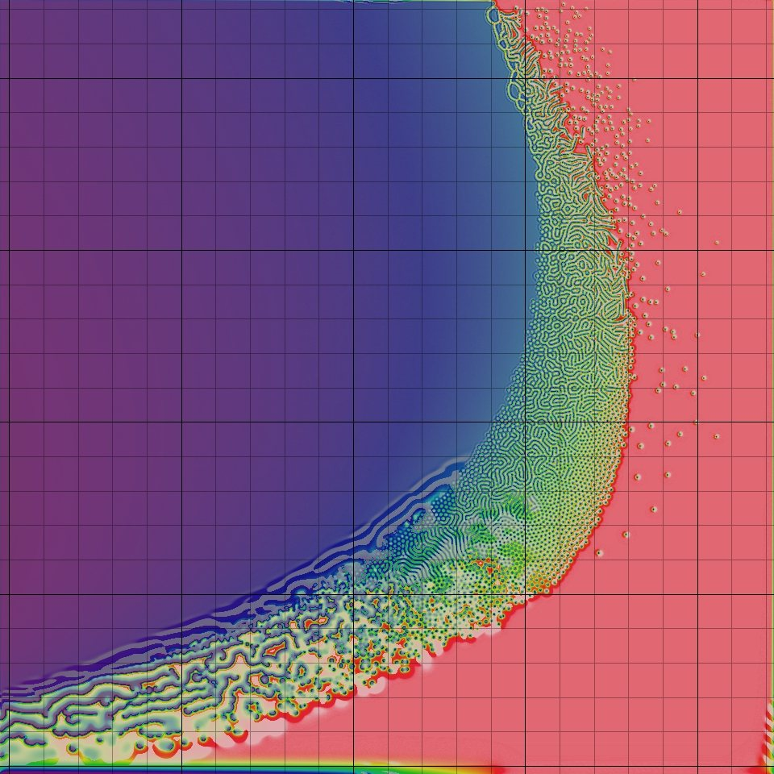
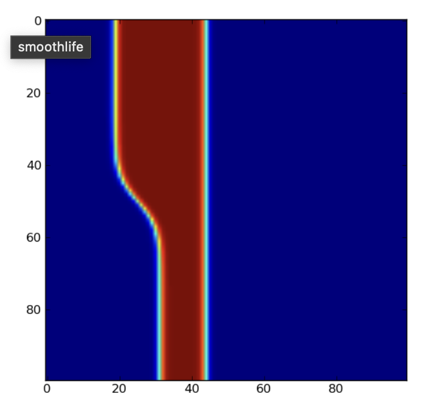

The mathematical notion of automaton indicates a discrete-time system with finite set of possible states, a finite number of inputs, a finite number of outputs, and a transition rule which gives the state at the next step in terms of the state and inputs at the previous step.

A Cellular Automaton applies this notion in parallel to a cellular space, in which each cell of the space is a stateful automaton.
Christopher Adami describes CAs as the first "artificial chemistries", since they operate as a medium to research the continuum between the inanimate (such as molecules in crystal and metalline structures) and the living (such as cells of a multi-cellular organism). Thus they can be used to model all kinds of information processing and development in biological systems, as well as questions of life's origins. (However the computational cellular systems we will visit are far, far simpler than biological cells.)

The CA model was propsed by Stanislaw Ulam and used by von Neumann -- in the 1940's -- to demonstrate machines that can reproduce themselves. Decades later Christopher Langton proposed a more concise self-reproducing CA, which has since been further improved upon using artificial evolutionary techniques:
Stephen Wolfram, author of Mathematica, performed extensive research on CAs and uncovered general classes of behaviour comparable to dynamical systems. A commonly referenced example is his 'rule 30', which is a 1D CA displayed below as a stacked trace (history goes down) -- whose pattern is reminiscent of some naturally occurring shell patterns:

Here are some of the well-known 1D rules:
See the Pen 1D Rules: 2019 by Graham (@grrrwaaa) on CodePen.
Wolfram divided CA into four classes, according to their long-term behavior:
Over here a 3D cellular automaton is taking over Minecraft, and here is a self-replicating computer in 3D.
The essential components that define a cellular system are:
Cellular space: A collection of cells arranged into a discrete lattice, such as a 1D strip, a 2D grid, or a 3D volume.
Cell states: The information representing the current condition of a cell. In binary CAs this is simply either 0 or 1.
Initial conditions: What state the cells are in at the start of the simulation.
Neighborhood: The set of adjacent/nearby cells that can directly influence the next state of a cell. The most common 2D neighborhoods are: 
State transition function: The rule that a cell follows to update its state, which depends on the current state and the state of the neighborhood. It gives the cell state[t+1] as a function of the states[t] of itself and neighbours.
Time axis: The cells are generally updated in a discrete fashion, which may be synchronous (all cells update simultaneously) or asynchronous (cells update sequentially).
Boundary conditions: What happens to cells at the edges of the space. A periodic boundary 'wraps around' to the opposite edge; a static boundary always has the same state, a reflective boundary mirrors the neighbor state.
The most famous CA is probably the Game of Life. It is a 2D, class 4 automata, which uses the Moore neighbourhood (8 neighbours), and synchronous update. The transition rule can be stated as follows:
If the neigbor total is exactly 3: New state is 1 ("reproduction")
Else: State remains the same ("dead")
It is thus an example of a outer totalistic CA: The spatial directions of cells do not matter, only the total value of all neighbors is used, along with the current value of the cell itself. Note also that these rules mean that the Game of Life is not reversible: from a given state it is not possible to determine the previous state.
The Game of Life produces easily recognizable higher-level formations including stable objects, oscillatory objects, mobile objects and objects that produce or consume others, for example, which have been called 'ponds', 'gliders', 'eaters', 'glider guns' and so on.
This CA is so popular that people have written Turing machines and, recursively, the Game of Life in it.
If the cells are densely packed into a regular lattice structure, such as a 2D grid, they can efficiently be represented as array memory blocks. The state of a cell can be represented by a number.
This is similar to the representation of an image as data -- a grid of pixel values, which are just numbers in a lattice.
The rules themselves can be translated pretty efficiently to procedural code, using if/else conditions.
One complication is that the states of the whole lattice must update synchronously. A naive implementation will thus update cells one at a time, and the neighborhood of a particular cell will contain both 'past' and 'future' states. One way to work around this is to maintain two copies of the lattice; one for the 'past' states, and one for the 'future' states. The transition rule always reads from the 'past' lattice, and always writes to the 'future' lattice. After all cells are updated, either the 'future' is copied to the 'past', or the 'future' and 'past' lattices are swapped, since the future of yesterday is the past of tomorrow.
This technique is called double-buffering, and is widely used in software systems where a parallel process interacts with a serial machine. It is used to render graphics to the screen, for example.
In past years we have implemented our CAs using operations on buffers in the CPU, like this:
See the Pen 2019 DATT4950 Jan 3 by Graham (@grrrwaaa) on CodePen.
However the nature of CAs makes them incredibly suitable for implementation using GPUs:
It turns out that by using GPU shaders, our cellular automata can run tends or even hundreds of times faster than on the CPU. Or put another way, we can make them at much higher resolutions, or make them much more complex, and still get good update frame rates.
So this year, we're going to implement our CAs using fragment shaders in GLSL. GLSL is a way to write programs that will run directly on your GPU. GLSL can be used in the web like on ShaderToy, or in Three.js, or basically any web page in a modern browser -- even when opened on your phone or a VR headset like the Quest 3. GLSL is also used in desktop OpenGL envionments, including TouchDesigner, Max/MSP/Jitter, Ossia, Hydra, and so on. It can also be used in Unity or Unreal, though they prefer you to use a more abstract language (HLSL) which then translates to GLSL. It is an incredibly useful skill for media arts today.
A really convenient way to explore this is using Shadertoy.com, a browser-based editor and viewer for fragment shaders. It's free to create an account so that you can save your shaders, and so long as you save them as "public", you can share them via the URL. Also, it's relatively easy to move shaders written in ShaderToy to other environments, such as Max/Jitter, TouchDesigner, Three.js, OpenFrameworks, Cinder, etc., and with a little more work, Unity, Unreal, Godot, etc.
A quick tutorial on GLSL in Shadertoy
Planning
How to initialize the field -- random on/off cells?
The next frame is a function of the previous frame; so we need a Buffer for the feedback loop
We will need an initialization event (frame zero? keyboard input?)
We need to read neighbor pixels via coordinate operations
Boundary conditions: we can use the wrap settings of the iChannel input, or define our own
Texture values are floating points (0.0 to 1.0), but we need integer values (0 or 1), so we can count them. We can cast a comparison to integer (e.g. int(N.x > 0.))
Can we draw input with the mouse via iMouse?
Can we rewrite it using mat3 kernels?
We actually have 4 values per pixel (R, G, B, A), but we are only using 1 right now. Can we use the others to visualize something useful?
Questions
Can you try different thresholds of neighbors for death and rebirth? Do you get complex behaviour, or one of Wolfram's other classes? Can you figure out what the rules need to be complex?
Will it run forever?
A backround noise can be added, such that from time to time a randomly chosen cell changes state. Try adding background noise to the Game of Life to avoid it reaching a stable or cyclic attractor. But too high a probability and it descends into noise. Try adding a temperature control to control the statistical frequency of such changes. Could something intrinsic to the system determine temperature? Could this vary over space?
Starting from this basis, what do you think would be interesting to change?
More variations are possible by modulating the basic definition of a CA, some of which have been explored more than others.
Look at the basic definition of CAs we saw above, and think: what could be varied from how the Game of Life works, but still be within the definition of a CA? What do you think we could change to make it more interesting?
Your Assignment 1 will a novel Cellular Automata of your own design & invention, implemented using Shadertoy.
Game of Life has only two states, 0 and 1, but we could have more states. For example, in the "Brian's Brain" CA, there are 3 states, which we typically encode as 1.0 (activated), 0.5 (decaying), and 0.0 (off).
The rules are simple:
It's pretty easy to build this if we start from the Game of Life.
https://www.shadertoy.com/view/t3tcDN
The HodgePodge CA also has three named states -- "healthy", "infected", and "sick", -- but one of them ("infected") includes a whole range of possible values:
(In the reference implementation, there are 254 possible values of increasing infection, so this is actually a 256-state automaton.)
The transition rule is a bit more complex:
Despite the terminology of infection & sickness, this really isn't a good model of contagion; but what it does is quite strange and interesting.
Can you predict from the algorithm what it might do? Let's look at the code a bit first, before we run it.
https://www.shadertoy.com/view/3XcyRs
This system typically goes through several stages:
The crucial parameter to vary these behaviors is the sickness rate.
The spiral patterns here are characteristic of Reaction Diffusion systems, which we will explore further later.
See http://www.sciencedirect.com/science/article/pii/016727898990081X#
Spatial inhomogeneity can be interesting to simulate different geographies (such as boundaries). The simplest option is to prime the system with inhomogeneous initial conditions, but these differences can quickly dissapear, whereas varying other components of a CA spatially can have more profound results (though, as with randomness, care may need to be taken that these differences do not overly dominate the process).
CA can be further varied with other spatially non-homogenous properties, such as:
What happens if the regions are moving?
https://www.shadertoy.com/view/t33cWs
https://www.shadertoy.com/view/wXGcRW
Temporal non-homogeneity can be used to perform a sequence of different filters, or otherwise help to build long- as well as short-term arcs of behaviour.
Are these variations sometimes still equivalent to a slightly more complex, but temporally homogenous, CA?
A mobile CA has a notion of active cells. The transition rule is only applied to active cells, and must also specify a related cell (such as one of the neighbors) of the current active cell as the next active cell. (This could also be partly probabilistic.)
There could be more than one 'active cell' -- there could even be a list of currently active cells. Non-active cells are then described as "quiescent". But what happens if two active cells occupy the same site?
See our old JavaScript version here:
See the Pen Langton's Ant: 2019 by Graham (@grrrwaaa) on CodePen.
At this slow speed, it doesn't seem like anything interesting is going to happen. It looks like it will gradually turn everything into noise.
But if we speed it up (by running more than one simulation step per frame), something unexpected happens!
The original video by Christopher Langton, including examples of multiple ants (and music by the Vasulkas):
It is interesting seeing what happens with more than one ant in the space:
See the Pen Multiple Langton Ants: 2019 by Graham (@grrrwaaa) on CodePen.
How would we implement this in GLSL? Let's start with what data is in each cell: - The cell value (0 or 1) - Is there an ant present? (0 or 1) - What direction is the ant traveling? (e.g. 0, 0.25, 0.5, 0.75 for E, N, W, S?)The rules are more difficult to implement. They are described as being 'from the point of view of the ant', but in shader programming, we have to think of things 'from the point of view of the pixel'. What activities can change our pixel's current values?
https://www.shadertoy.com/view/W33yRS
We can't easily speed this up. Starting from one ant, it takes over a minute for the structure to appear. But what we can do is seed it with thousands of ants!
Mitchel Resnick's termite model is a random walker in a space that can contain woodchips, in which each termite can carry one woodchip at a time. The program for a termite looks something like this:
If I am carrying a wood chip, drop mine where I am and turn around
Else move forward and pick up the woodchip
Over time, the termites begin to collect the woodchips into small piles, which gradually coalesce into a single large pile of chips.
This is a trickier model to implement in GLSL -- it takes careful attention to movement of cells to make sure the number of termites does not accidentally increase! But it's the same basic idea as Langton's Ant. Remember: the fragment shader program is always from the perspective of the cell (not the ant/termite): a cell needs to know if a termite is entering it from a neighbor, or if a termite currently in the cell will remain there. If neither of those cases are true, then the cell will end the frame with no termite present.
https://www.shadertoy.com/view/33cyRS
A stochastic CA uses some kind of (pseudo-)random probabilities of change in the transition rules. This could be to emulate real-world systems that are subject to probabilistic or chance-based factors. It may also help avoid the CA falling into a stable or cyclic pattern -- but at the same time, it also runs the risk of descending into uninteresting noise.
Why do we call it "pseudo-" random?
Take a look at how our random4 function is written in GLSL:
// given a vec3 input seed, return a pseudorandom vec4
vec4 random4(vec3 p) {
vec4 p4 = fract(p.xyzx * vec4(.1031, .1030, .0973, .1099));
p4 += dot(p4, p4.wzxy + 19.19);
return fract((p4.xxyz + p4.yzzw) * p4.zywx);
}
Given the same input seed, the random4() function will do some math that is completely deterministic, which means, it will compute the same result every single time. (Here, fract simply returns the fractional component of a number, and dot is the dot product, which multiplies each of the vec4 components of its arguments, then sums them up. This all boils down to multiplications, additions, and divisions.)
There is nothing random in this at all! Or rather, it is only as random as the input seed is. Typically we seed it with something dependent on space and time, such as vec4 noise = random4(vec3(fragCoord, iTime)), to ensure the seed value is unique per cell and per frame. But that is still not random!
The nature of the math however has two important properties that make it very useful to us:
For any particular input seed, it is very difficult to predict what the output value would be, without actually doing the math. It is unpredictable even though it is not random.
Given a random input seed, the output value is roughly equally likely to be in any particular place between 0.0 and 1.0. That is, over enough time, the range of output values is equally distributed.
This is similar to rolling a dice: any particular face of the dice is equally likely to come up (flat distribution), but you have no idea which one it will be without doing the actual physics of rolling the dice (unpredictable).
So, even though our generator is not truly random, so long as we keep using unique seeds, it is unpredictable and equally likely to be anywhere in the output range.
Most of the time this is good enough to create the appearance of randomness -- but it is important to remember that we shouldn't trust it to be truly random. In simulation sciences, the choice of random source, and the diversity of seeds used, can be incredibly important to ensure the validity of any conclusions drawn. A poor pseudo-random generator may also manifest patterns in the output (where the distribution and colour is no longer flat), or may not completely cover all values in the distribution, for example.
Let's look at some example CAs using probabilistic rules.
The Forest Fire model below has three states: a cell can be "empty", "tree", or "burning".
So we five several probability thresholds here: Chance of spore; Chance of growth; Chance of lightning; Chance of fire spreading; Chance of rain;
Here's this model runing in a Javascript simulation. It can be interesting to change the probabilities to see how it behaves:
See the Pen Forest Fire: 2019 by Graham (@grrrwaaa) on CodePen.
Unfortunately, this one poses a few challenges to translate to GLSL, because of the extremely low numbers we need for the probability tests. The reason is limits of floating point resolution on the GPU, and the quality of the random number generator we have availble in our GLSL code. Simply put, if the probability threshold is too low, it no longer seems to make any difference. Compare the output for example of these:
vec4 noise = random4(vec3(fragCoord, iTime));
fragColor = vec4(noise.x < 0.1);
fragColor = vec4(noise.x < 0.01);
fragColor = vec4(noise.x < 0.001);
fragColor = vec4(noise.x < 0.0001);
fragColor = vec4(noise.x < 0.00001);
At a certain point, the outputs look the same. Why?
We can work around this limitation by applying our probability tests against two values at the same time:
fragColor = vec4(noise.x < 0.001 && noise.y < 0.001);
This is like testing against 0.000001, because 0.001 x 0.001 = 0.000001.
With that, we can write the Forest Fire model with the very low probabilities we need:
https://www.shadertoy.com/view/tXdcDN
Play with different values to see what you find. There can be temporal and spiral oscillations hiding in here, if you can find them.
The key factor in a probabilistic model is how you calculate the probability of a change. In the forest fire model, these were simply constants, but are only tested according the presence of particular types of neighbors (burning trees, empty land, etc.).
In many probabilistic models, the probability of a change depends on the local difference of a cell from its neighbors. So, instead of using if/else conditions along with probabilities, we only use probabilities. This kind of model is sometimes called a contact process model. It can be used to model the spread of infection, voter bias, or behaviours of fundamental physics.
A simple infection model, for example: - infected sites become healthy at a constant probability - healty sites become infected at a probability proportional to the number infected neighbours
Could you implement this? Could you extend it to incorporate effects of vaccination, social distancing, multiple diseases, etc.?
(This is not the same as the Hodgepodge we saw above -- that one was completely determinsitc, not stochastic.)
Let's start from something simpler:
The Ising model of ferromagnetism in statistical mechanics models the probability of a point in space flipping between positive or negative spin. The probability of this change happening depends on the local entropy: the probability is higher if the change of state would move the site closer to energetic equilibrium with its local neigborhood. That is, nearby cells are more likely to become the same than to become different.
However, there is also an increasing chance of a site changing state randomly, according to the temperature.
This implies two opposing tendencies, one diffusion like and convergent, which promotes order (entropy reduction), and one destructive, which induces divergent chaos (temperature).
To implement this, we need to think about each element in turn:
State ("spin") is either 0 or 1. This is actually our only cell value. However, we can use the other channels of our pixel to capture more information about the system, so that we can visualize it in the final image.
For neighborhood we could use the Moore region of 8 neighbors, just like the Game of Life.
Temperature is just a parameter, which we could say is between 0.0 and 1.0. Perhaps it is a constant, or perhaps we might try varying it over time, over space, by mouse interaction, etc.
The entropy could be modeled as the proportion of neighbors that are in a different state (0.0 if all the same, 1.0 if all different). This is a bit of a simplification of the physics, but it captures the essence of it.
From these we compute the probability of change, between 0.0 and 1.0. Change should be more probable if entropy is high, and also if temperature is high. The physically correct way to calculate this uses Hamiltonians and some more complex math, but we can use a simpler approximation. I found that pow(entropy, 1./temperature) gives decent outcomes. See https://www.desmos.com/3d/cgr7h3xbyd
Then the transition rule is simple: if a random (noise) value is less than the probability, flip the cell's state.
Try mapping temperature over space, e.g. using uv.x. Or mapping it to the proximity to the mouse, to create hotspots.
As is often the case, it can be interesting to visualize different parts of the system in the final shader using different colours. For example, we use this to visualize the entropy, temperature, and probability.
https://www.shadertoy.com/view/tXtcz2
At high temperatures, the system remains noisy, while at lower temperatures it gradually self-organizes into grouped zones with equal spin. This idea of a temperature control generalizes to many kinds of systems.
The cellular Potts model (also known as the Glazier-Graner model) generalizes probabilistic CA beyond the two states of the Ising model to allow more states, and in some cases, an unbounded number of possible site states; however it still utilizes the notion of statistical movement toward neighbor equilibrium to drive change, though the definition of a local entropic differene (the Hamiltonian). Variations have been used to model grain growth, foam, fluid flow, chemotaxis, biological cells, and even the developmental cycle of whole organisms.
How would we need to change the Isnig model to have more than 2 states?
One way to initialize the cell values is using e.g. floor(noise.x * 5.) / 5..
To select a random neighbor, we could either generate a new texture lookup with a random offset. Or, we could store all our neighbors in an array, and pick one at random. E.g.:
// store neighbors in array:
float near[8] = float[8](N.b, E.b, S.b, W.b, NW.b, SW.b, NE.b, SE.b);
// pick a cell at random:
int idx = int(noise.z * 8.);
// copy their state
C.b = near[idx];
This starts to look a bit like a map of provinces, or perhaps something like foam.
Again, visualize the entropy, probability, and moments of change.
What if we allowed the states to be any value between 0.0 and 1.0 -- seeding the state with noise.x? It starts to look even more like foam!
https://www.shadertoy.com/view/W3dyWl
This would be a great starting point for more exploration! Here's one in which I modified the entropy to take into account relative differences of state, and modifed the update rule to also introduce a mutation of state each time: https://www.shadertoy.com/view/tXVyRV
States need not be limited to single numbers -- in other systems the state could be represented by an n-tuple of values, or a recursive structure allowing unbounded complexity. Stan Marée, Paulien Hogeweg and Alexander Panfilov used this model to simulate the whole life cycle of Dictyostelium discoideum -- see the webpage here, e.g. Fig 4.1c. This is all a cellular automaton!
Now we have seen a few examples of CA that use continuous-valued states (e.g. any number between 0.0 and 1.0), and some more mathematical transition rules (rather than if/else conditions). Let's see some more.
The reaction-diffusion model was proposed by Alan Turing (shortly before his passing) to describe embryo development and pattern-generation (Turing, A. The Chemical Basic for Morphogenesis.). His RD systems were presented as continuous functions in mathematics, but they can be approximated using cellular automata with continuous-ranged values. This is still used today in computer graphics -- a landmark publication being Greg Turk's famous paper paper on animal pattern generation using cellular automata across meshes.
Let's look at a simple RD system. Here's a clear explanation of one on Karl Sims' website.
The chemical interpretation:
That's a discrete description, but we'll assume that a pixel could contain thousands or millions of A's and B's, so instead we'll model them in a continuous way as "concentrations". So our cell state is two numbers, for the concentrations of A and B.
The update rule applies the reaction equations for both A and B. These are "rate of change" equations, so they add to (or remove from) the existing concentrations. Here's are the two rates of change:
The Reaction Product change is the same in both cases. Since it takes two B's to make an A, it is A * B * B.
The feed rate is proportional to existing A, using feedrate * (1.0 - A), which ensures A is never > 1.0. Typically in the range of from 0.01 to 0.1.
The kill rate uses (killrate + feedrate)*B to ensure the kill rate is never less than the feed rate. Typically in the range of from .045 to 0.07.
The most complex part is the diffusion. The basic idea is that, over time, any chemical becomes more evenly distributed in space. That's a bit like what a blur does. However, for diffusion it is essential that this is done in such a way that the total quantity over space does not increase or decrease, i.e. it is "mass preserving". (Otherwise, the system could easily just blow up in an unrealistic way!)
We can implement this as a filter kernel, to find out for a given cell, how different its average neighborhood is. In Karl Sims' webpage, he suggests using a 3x3 kernel like so:
0.05, 0.2, 0.05,
0.2, -1, 0.2,
0.05, 0.2, 0.05
Notice that if you add up all of these values, the sum total is zero. That is what ensures that this kernel is mass preserving. Here's how we could do this in GLSL:
// assumes we have already got C, N, E, S, W, etc. like we did in many other shaders:
vec4 diffusion = 0.05*(NE+NW+SE+SW) + 0.2*(N+E+S+W) - C;
Or if you want a more programmatic way:
mat3 kernel = mat3(
0.05, 0.2, 0.05,
0.2, -1, 0.2,
0.05, 0.2, 0.05
);
// loop over a 3x3 region, summing results:
vec4 diffusion = vec4(0.0);
for (int i = -1; i <= 1; i++) {
for (int j = -1; j <= 1; j++) {
// get the image at this texel:
vec4 value = texture(iChannel1, (fragCoord + vec2(i,j)) / iResolution.xy);
// Apply kernel weight and sum:
diffusion += value * kernel[i+1][j+1];
}
}
With that, we have almost enough to build our first RD system.
But what should the initial conditions be? I find that this system can be quite sensitive to start conditions, and can easily blow up. I find that starting with a field full of A's and a few blobs of B here & there is a good starting point.
https://www.shadertoy.com/view/W3dyDl
Interpretation: There are two parts to this system: an "activator" and an "inhibitor". Both diffuse over space, but the activator diffuses more slowly, leading to local-scale positive feedback, but longer-range negative feedback.
This isn't the first time we have had a system that has balanced two different tendencies. Can you see any parallels with, for example, the Game of Life, or the Ising Model?
Some classic parameters for specific behaviours:
Mitosis : killrate = 0.062 ; feedrate = 0.028
Solitons : killrate = 0.060 ; feedrate = 0.030
Flowers : killrate = 0.062 ; feedrate = 0.055
Finger : killrate = 0.060 ; feedrate = 0.037
U-Skate : killrate = 0.061 ; feedrate = 0.062
Mazes : killrate = 0.057 ; feedrate = 0.029
Spirals : killrate = 0.047 ; feedrate = 0.014
This system is also known as the Gray-Scott model, as described in Pearson, J. E. Complex Patterns in a Simple System. An optimized browser-based example is here. Another implementation in Shadertoy: https://www.shadertoy.com/view/ldXBz8
There is a wonderful archive of this model at this webpage, including many great video examples of the u-skate world, and even u-skate in 3D.

Some of the results share resemblance with analog video feedback (example, example), which has been exploited by earlier media artists (notably the Steiner and Woody Vasulka).
The results are good, but the diffusion is quite slow -- maximum one pixel per frame for the faster chemical. If you want to play with faster reaction-diffusion systems, you'll need to use a way of diffusing over wider ranges. You can try using larger kernels, such as a 5x5 kernel for up to two pixels per frame. But that means 25 texture lookups per pixel. This quickly gets very expensive. Another option is to run several passes per frame.
We can do this in Shadertoy by using several Buffer passes in a loop A -> B -> C -> D -> A etc. To save us writing the same code four times, we can re-write it as a function in the Common tab and re-use that in each Buffer tab.
https://www.shadertoy.com/view/33GyRc
Karl Sims has suggestions for exploring variations -- maybe these are interesting for us to try?
It might be interesting to see what bringing external textures (or video streams) in as influences might do.
It's still a little frustrating that the diffusion is expensively slow.
Another option for larger kernels is to apply the diffusion as two separate passes: one pass diffuses horizontally, the second pass diffuses the result vertically (again, in Shadertoy this would mean using two Buffer passes). This two pass (horizontal, vertical) structure is often how high quality blur shaders work.
The thinking goes like this: To simulate diffusion at a given cell, we want the average value of all grid locations within a fixed radius of that cell. Averaging over a larger radius corresponds to having a faster diffusion rate, because there are more cells contributing to the new value.
One of the most common methods to compute an average over an area is to take the Gaussian convolution. A neat feature of the Gaussian convolution kernel is that it is mass-preserving (also known as brightness-preserving or intensity-preserving). Each output pixel value is a weighted average of its neighbors. The kernel of weights is normalized, meaning the sum of all its values (weights) equals 1. Because the sum of the weights is 1, the total intensity (or "mass") of the image remains constant. And the Gaussian blur decays exponentially with distance, so it actually makes a workable model for diffusion.
The problem is, it is very expensive. To get a deep blur (or fast diffusion) we need to average over many pixels, which means we need to do a huge number of computations. But there's a neat trick we can use here that is often used for efficient blur image processing. Another neat feature of a gaussian function is that the product of two Gaussian functions is a Gaussian, and the convolution of two Gaussian functions is also a Gaussian. This means that we can apply a gaussian convolution blur in one axis only (say, only horizontally in the X axis), and then to the result of this, apply another Gaussian in the other axis (say, only vertically in the Y axis), and the final result we get here is a Gaussian blur in two dimensions. This two pass (horizontal, vertical) structure is often how high quality blur shaders work. In Shadertoy, we can do this by using two Buffer passes.
(This two-pass diffusion or regional average technique will also help us with some other continuous automata.)
With a workable mass-preserving Gaussian blur convolution, we can turn that into diffusion just by running it in a feedback loop. If we repeatedly apply our blurs in feedback over many frames, it will become more and more diffused over the space.
Now, the core pattern-generating capacity of a reaction diffusion system is the way that one chemical diffuses more quickly than the other. We can model that by applying two blurs, one with a larger radius than the other. In the Turing reaction, activators and inhibitors diffuse at different rates, which corresponds to taking averages over different radii.
To model the reaction, then we just need to take the difference between the two chemicals. This is just like the subtraction of a smaller blur from a larger blur!
In fact this can be modeled with only 1 value -- think of it as representing the proportion between chemical A and chemical B. If the reaction difference is positive, our proportion of A:B goes up; if the reaction difference is negative, our proportion of A:B goes down.
So we have one channel representing a proportion of A:B, two blurs of this at different radii, and the difference of the blurs tells us whether the proportion should increase or decrease. Amazingly that is also enough to produce Turing-style patterns!
You can also try adding a little bias to the proportion on every frame, to emulate the case of one chemical being constantly fed into the system.
https://www.shadertoy.com/view/33cBz4
What else can you think of that might be interesting to do with this?
Is it possible to completely eliminate discreteness in all aspects, to create a truly continuous CA? To do so, let's return to our original definition of a CA, and for each component in turn, change discrete into continuous:
States: The states are not discrete (such as 0 or 1) but belong to a continuum (such as the linear range 0.0 to 1.0). We've seen many CAs of this kind now.
Neighborhood: Instead of simply considering whole neighbor cells, we may want to apply some kind of weighted average over the surrounding region -- a sampling "kernel". Proper weighting of a kernel can eliminate much of the artifacts due to regular grid spacing. We saw how to do this using Gaussian convolution -- like blur -- for diffusion. The same idea can be used to compute the average in a circular neighborhood!
The kernel could be simply expressed as an inner and outer radius, for example, or an ideal distance with sampling weighted according to a function of distance from this radius. This is just like the subtraction of a smaller blur from a larger blur!
(Alternatively, it may also be viable to explore a statistical sampling strategy, selecting each time only a random sub-set of the possible sampling locations to create a cheaper approximation of continuous sampling.)
Transition functions: With a continuous range of states, the transition rule can no longer be a simple lookup table, but instead must map continuous ranges. For example, we have already seen several continuous-valued CAs in which the transition function is a mathematical function, such as accumulating reaction diffusion rates of change.
But what if we want something that more approximates a logical decision? Comparators can be used to segment continuous space into ranges, and drive control flow, but the use of control flow implies that the output of the transition rule is still principally discontinuous. To express a decision continuously, we can choose a smooth saturation function. A sigmoid function, for example, is a continuous input & output function that nevertheless approximates the states of discrete functions. A convenient option is the smoothstep() function built into GLSL.

Another option here is to use probabilistic functions. Finding a continuous system whose behaviours persist with the addition of some random noise is tantamount to finding an interesting system that is robust to perturbations -- a useful feature for anything that must interact with the real world!
Time: How can we turn discrete steps in time into a smooth flow? Instead of simply outputting a new state, change may be spread over time as a differential. That is, what is output from the transition function is an offset to accumulate to the current state.
SmoothLife uses a discrete grid, but all of states, kernel, and transition functions are adjusted for smooth, continuous values. Paper here. By doing so, it removes the discrete bias and leads to fascinating results. Another implementaton. Taken to 3D. In effect, by making all components continuous, it is essentially a simulation of differential equations. Here is a great explanation of the SmoothLife implementation, with a jsfiddle demo
States are continuous pixel values are between 0.0 and 1.0.
A "cell", in the Game of Life sense, is considered to be a diffuse region covering several pixels. To get its value, a disc around a cell's center is integrated and normalized (that is, we are computing the average, also between 0.0 and 1.0) for the cell's likely state.
The neighbor state is a ring surrounding the center disc. This can be implemented as summing over a larger disc, and subtracting the sum of the smaller center disc. Again, the neighbor state is normalized between 0.0 and 1.0.
How do we make the transition function (the Game of Life rules) continuous? First, we translate the neighborhood rules to a normalized 0.0 to 1.0 range (by dividing by 8) to get our thresholds for survival, death, and rebirth, so that they can work with our normalized neighborhood value. We also want to smooth the boundaries between these regions, which we can do with sigmoid shapers, something like this:

That's already enough to get some SmoothLife behaviour. All we need to know is what are good initial conditions?
We can also translate the transition function from discrete time to continuous time by re-epxressing them in terms of differential functions (velocities of change).
Lenia continues in the spirit of SmoothLife, and has been extensively explored & documented to identify over 400 different organisms, occuping distict environmental niches (different physical constants), with various locomotive patterns catalogued, etc.
When we looked at porting the Ant and Termite models to GLSL, we found that we had to shift our perspective. Rather than taking the perspective of a living agent -- the ant or termite -- as it moves around space, we had to shift our perspective to a single, unmoving point in space -- the cell -- and handle the conditions under which this cell is occupied or not. This is a less intuitive way of thinking, but it can be quite a powerful technique.
If the transition rule (or, the set of transition rules as a whole) is careful to preserve a total cell occupancy values before and after, it can give the impression of a mass-conserving system, such as modeling the motion of particles and fluids. The elementary 1D traffic CA (rule 184) is a simple particle CA.
Sometimes this is considered "mass preserving". That is, the total amount of "stuff" in the world never changes, it just moves around.
Note that our Ant and Termite models are not strictly mass-preserving: can you explain why?
Mass-preserving CAs can be guaranteed not to dissolve into homogenous final states of all-black/all-white/etc. -- which can alleviate any need for an external limiter to keep the balance -- but this does not mean they won't find a stable or cyclic end. (On the other hand, CAs whose rules do not appear to preserve mass can still avoid dissolution into homogeneity.)
Note that mass-preservation does not imply that the system is reversible. Reversibility is quite a different property, which states that each output neighbourhood can only be caused by a single predecessor neighbourhood. Some, but certainly not all, particle CAs are reversible.

In 1969, German computer pioneer (and painter) Konrad Zuse published his book Calculating Space, proposing that the physical laws of the universe are discrete by nature, and that the entire universe is the output of a deterministic computation on a single cellular automaton. This became the foundation of the field of study called digital physics. Zuse's first model is a 3D particle CA.
A CA-inspired digital physics hypothesis is currently being promoted by Stephen Wolfram, as described in his magnum opus A New Kind Of Science.
Those models are determinsitic, but particle CA can also use probabilistic rules to simulate brownian motions (like our termite explorers) and other non-deterministic media (but the rules would usually still need to be matter/energy preserving over long-term averages -- i.e. probabilities must balance to preserve mass). Particle CAs can also benefit from the inclusion of boundaries and other spatial non-homogeneities such as influx and outflow of particles at opposite edges to create more interesting gradients or otherwise keep the system away from equilibrium (a dissipative system).